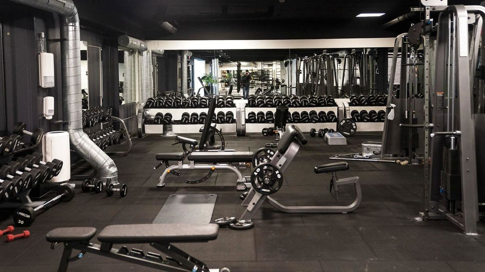
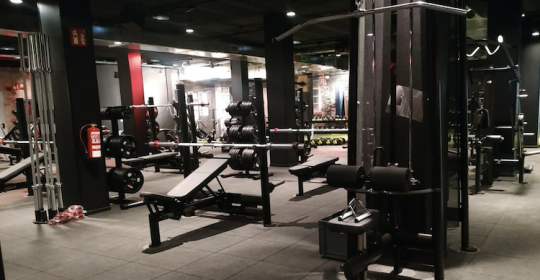
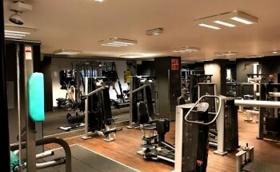
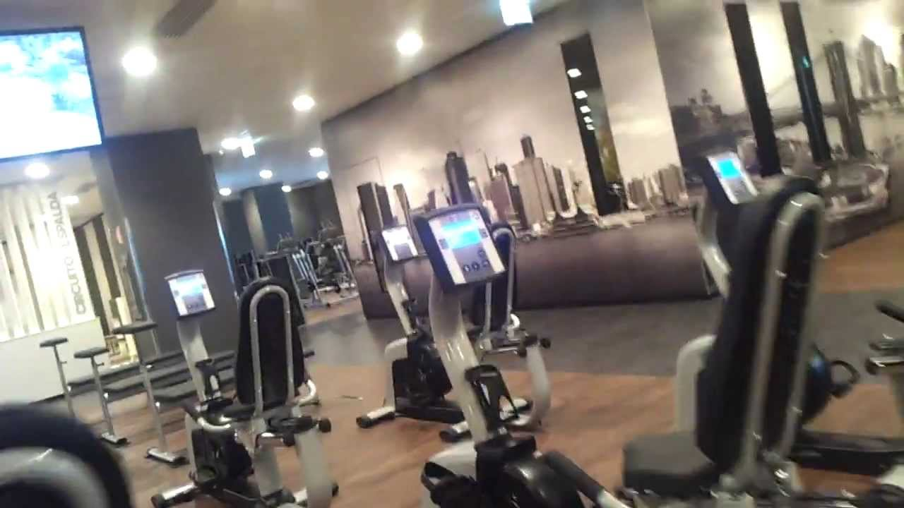
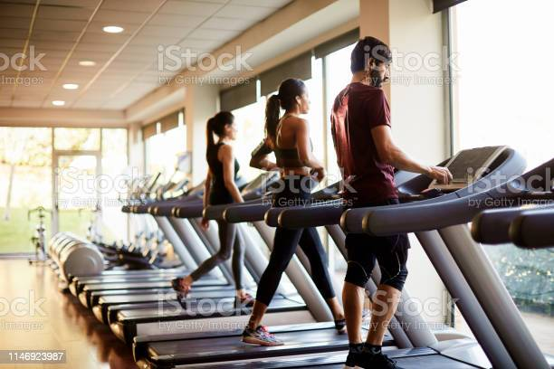

Podes elegir entre las distintas opciones
Ademas de la Casa Central hemos preparado para vos, distintas sedes, para que entrenes todos los días sin perderte la oportunidad de sentirte bien cada segundo. Podes combinar entre todas, o elegir la que te quede mas comodo. ¿Que esperar para comenzar?
Casa Central
Caballito 
Centro 
Flores 
Puerto Madero 
Zarate 